Introduction
-
IoT Brushless Motor Driver
SKU: ROB-22132

-
The SparkFun IoT Brushless Motor Driver is an all-in-one development platform. It includes all the components to create a simple IoT device or learn about control systems. On the boaard, users will find an ESP32 microcontroller, a TMC6300 motor driver, a gimbal motor, a TMAG5273 hall-effect sensor, three INA240A1 inline current sensors, an MCP6021T low-side current sensor, two user buttons, a Qwiic connector, a 3-pin JST connector (for the gimbal motor), and a WS2812 RGB LED.
The TMC6300 from ADI + Trinamic is a powerful and easy-to-use three-phase motor driver with up to 2A (1.4ARMS) of total drive current. Separate high-side and low-side control of the three half-bridges allows for incredible control of each phase of the motor commutation. We've found the Arduino Simple Field Oriented Control library to work well with the TMC6300 motor driver.
However, a field-oriented control (FOC) algorithm requires some feedback to close and optimize the control loop. Therefore, we integrated a TMAG5273 hall-effect sensor and INA240A1 current sensor amplifiers (both manufactured by Texas Instruments) into the design of the IoT motor driver board. This allows users to incorporate a position sensor and current sensing into the FOC algorithm or any feedback control loop they choose to implement.
Purchase from SparkFun
Required Materials
To get started, users will need a few items. Now some users may already have a few of these items, feel free to modify your cart accordingly.
- Computer with an operating system (OS) that is compatible with all the software installation requirements.
-
USB 3.1 Cable A to C - 3 Foot - Used to interface with the IoT Brushless Motor Driver (1)
- If your computer doesn't have a USB-A slot, then choose an appropriate cable or adapter.
-
SparkFun IoT Brushless Motor Driver (ESP32 WROOM, TMC6300) (1)
- The included gimbal motor requires a 6 to 8V power supply. However, for zero-load, low-speed testing, we have found the power from the USB connection to be sufficient.
-

USB 3.1 Cable A to C - 3 Foot
CAB-14743 -
IoT Brushless Motor Driver (ESP32 WROOM, TMC6300)
ROB-22132
Jumper Modification
To modify the jumper, users will need soldering equipment and/or a hobby knife.
New to jumper pads?
Check out our Jumper Pads and PCB Traces Tutorial for a quick introduction!
-

How to Work with Jumper Pads and PCB Traces
-

Solder Lead Free - 100-gram Spool
TOL-09325 -

Weller WLC100 Soldering Station
TOL-14228 -

Chip Quik No-Clean Flux Pen - 10mL
TOL-14579 -

Hobby Knife
TOL-09200
Suggested Reading
As a more sophisticated product, we will skip over the more fundamental tutorials (i.e. Ohm's Law and What is Electricity?). However, below are a few tutorials that may help users familiarize themselves with various aspects of the board.
-

How to Install CH340 Drivers
-

ESP32 Thing Plus (USB-C)
-

TMC6300 BLDC Motor Driver
-

Installing the Arduino IDE
-

Installing Board Definitions in the Arduino IDE
-

Installing an Arduino Library
-

Logic Levels
-

Pulse Width Modulation
-

Analog vs. Digital
-

I2C
-

SPI
-

Serial Communication
-

How to Solder: Through-Hole Soldering
-
How to Work with Jumper Pads and PCB Traces
-

Motors and Selecting the Right One
-

Alternating Current (AC) vs. Direct Current (DC)
Need to control a different type of motor?
This tutorial is primarily focused on utilizing the TMC6300 motor driver to control a 3-phase brushless DC (BLDC) motor. We would recommend users explore other products for these specific motors and actuators. Below, are additional product tutorials and resources for our other actuator and motor types:
-

Hookup Guide for the Qwiic Motor Driver
-

TB6612FNG Hookup Guide
-

SparkFun ProDriver Hookup Guide
-

Easy Driver Hook-up Guide
-

Basic Servo Control for Beginners
-

Hobby Servo Tutorial
-

Pi Servo pHAT (v2) Hookup Guide
Hardware Overview
Board Dimensions
The board dimensions are illustrated in the drawing below; the listed measurements are in inches.
Board dimensions (PDF) for the IoT Motor Driver board, in inches.
Need more measurements?
For more information about the board's dimensions, users can download the eagle files for the board. These files can be opened in Eagle and additional measurements can be made with the dimensions tool.
Eagle - Free Download!
Eagle is a CAD program for electronics that is free to use for hobbyists and students. However, it does require an account registration to utilize the software.
 Dimensions Tool
Dimensions Tool
This video from Autodesk demonstrates how to utilize the dimensions tool in Eagle, to include additional measurements:
USB-C Connector
The USB connector is provided to power and program the board. For most users, it will be the primary programming interface for the ESP32 module on the IoT Motor Driver board.
USB-C connector on the IoT Motor Driver board.
Power
The IoT Motor Driver only requires 5V to power all of the board's components. The simplest method to power the board is through the USB-C connector. Alternatively, the 3V3 pin can be used to supply power to any of the components, except the motor driver.
IoT Motor Driver power connections.
Below, is a general summary of the power circuitry on the board:
3V3- Provides a regulated 3.3V from the USB (5V) power to the board, excluding the TMC6300 motor driver.3V3_A- Provides a regulated 3.3V from the USB (5V) power to only the TMC6300 motor driver.- The motor driver will not function without power from the USB connector.
- The 3.3V AP63357 LDO regulator can source up to 3.5A.
VUSB- The voltage from the USB-C connector, usually 5V.- Power source for the entire board.
- Powers the two 3.3V voltage regulators (AP2112 and AP63357).
- Features reverse current protection and a thermal fuse.
MEAS- These pins can be used to measure the current being drawn through the USB connector (see the Jumpers section).
- Power source for the entire board.
GND- The common ground or the 0V reference for the voltage supplies.- Qwiic Connector - Provides a regulated 3.3V voltage to the Qwiic devices.
Info
For more details, users can reference the schematic and the datasheets of the individual components on the board.
Motor Voltage
The Gimbal Stabilizer Motor has an operating voltage range of 6 - 8V. However, we have found that it still functions properly with only 3.3V provided by the IoT Motor Driver board.
CH340 Serial-to-UART
The CH340 allows the ESP32-WROOM to communicate with a computer/host device through the board's USB-C connection. This allows the board to show up as a device on the serial (or COM) port of the computer. Users will need to install the latest drivers for the computer to recognize the board (see Software Overview section).
Microcontroller - ESP32-WROOM
The brains of the IoT Motor Driver, is an ESP32-WROOM module with 16MB of flash memory. Espressif's ESP32-WROOM module is a versatile, WiFi+BT+BLE MCU module that targets a wide variety of applications. At the core of this module is the ESP32-D0WDQ6 system on a chip (SoC) which is designed to be both scalable and adaptive microcontroller. Its laundry list of features include:
-
Features:
- Xtensa® Dual-Core 32-bit LX6 Microprocessor (up to 240MHz)
- 448KB ROM and 520KB SRAM
- 16MB of Embedded SPI Flash Storage
- Cryptographic Hardware Accelerators
- AES, SHA2, ECC, RSA-4096
- Integrated 802.11 b/g/n WiFi 2.4GHz Transceiver (up to 150Mbps)
- Integrated dual-mode Bluetooth (Bluetooth v4.2 and BLE)
- 26 GPIO (including strapping pins)
- 8x Capacitive Touch Electrodes
- Operating Voltage: 3.0 to 3.6V
- WiFi: 380mA (peak)
- Light-Sleep: 800µA
- Deep-Sleep: 10 - 150µA
- Xtensa® Dual-Core 32-bit LX6 Microprocessor (up to 240MHz)
-
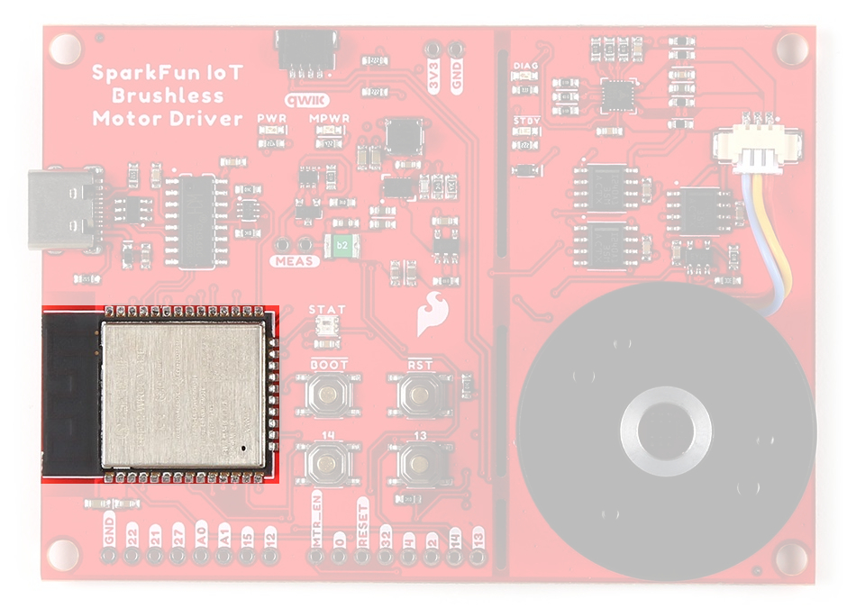
ESP32-WROOM module on the IoT Motor Driver.
Warning
Users should be aware of the following nuances and details of this board
- The ESP32-WROOM is only compatible with 2.4GHz WiFi networks; it will not work on the 5GHz bands.
- For details on the boot mode configuration, please refer to section 3.3 Strapping Pins of the ESP32-WROOM module datasheet.
Info
The ESP32-WROOM module has various power modes:
- Active - The chip radio is powered on. The chip can receive, transmit, or listen.
- Modem Sleep - The CPU is operational and the clock is configurable. The Wi-Fi/Bluetooth baseband and radio are disabled.
- Light Sleep - The CPU is paused. The RTC memory and RTC peripherals, as well as the ULP coprocessor are running.
- Deep Sleep - Only the RTC memory and RTC peripherals are powered on. The ULP coprocessor is functional.
- Hibernation - Only one RTC timer on the slow clock and certain RTC GPIOs are active.
- Off - Chip is powered off
For more information on the power management of the ESP32-WROOM module, pleaser refer to Section 3.7 and Tables: 8 and 17 of the ESP32 SoC Datasheet.
Debugging
For users interested in debugging their code, the JTAG pins are broken out on the board. However, the debugging feature is only available through the ESP-IDF.
TMS:GPIO 14TDI:GPIO 12TCK:GPIO 13TDO:GPIO 15
The JTAG pins of the ESP32-WROOM module on the IoT Motor Driver.
Firmware Download Mode
Users can manually force the board into the serial bootloader with the BOOT button. Please, refer to the Boot Button section below for more information.
Peripherals and I/O
Warning
Users should be aware of the following nuances of this board
- ⚡ All the GPIO on the IoT Motor Driver are 3.3V pins.
- The I/O pins are not 5V-tolerant! To interface with higher voltage components, a logic level adapter is recommended.
- ⚡ There are electrical limitations to the amount of current that the ESP32-WROOM module can sink or source. For more details, check out the ESP32-WROOM module datasheet.
- There are some limitations to the ADC performance, see the Note from the ADC Characteristics section of the ESP32 SoC datasheet.
The ESP32-WROOM module has 26 multifunctional GPIO, of which, 16 I/O pins are used to interface with motor driver, sensors, and status LED on the board. Additionally, 13 I/O pins are broken out to PTH pins and the users buttons. All of the IoT Motor Driver pins have a .1" pitch spacing for headers.
While all of the GPIO pins are capable of functioning as digital I/O pins, various pins can have additional capabilities with the pin multiplexing feature of the ESP32 SoC. For more technical specifications on the I/O pins, please refer to the ESP32 SoC datasheet.
- 13x 12-bit analog to digital converter (ADC) channels
- 3x UARTs (only two are configured by default in the Arduino IDE, one UART is used for bootloading/debug)
- 3x SPI (only one is configured by default in the Arduino IDE)
- 2x I2C (only one is configured by default in the Arduino IDE)
- 2x I2S Audio
- 2x digital-to-analog converter (DAC) channels
- 16x 20-bit PWM outputs
- 8x Capacitive Touch Inputs
Info
Users should be aware of the following limitations for the board in the Arduino IDE.
- Not all of the features, listed above, are available in the Arduino IDE. For the full capabilities of the ESP32, the Espressif IDF should be utilized.
- Only one I2C bus is defined.
- Only two UART interfaces are available.
- UART (USB):
Serial RX/TXPins:Serial1
- UART (USB):
- Only one SPI bus is defined.
Peripheral Devices
This development board features several components operating together to create an IoT device. Their connections are shown in the diagram below and their operations are listed in the boxes below. For more details on each component, please refer to the sections below.
Block diagram of the IoT Motor Driver board's peripherals.
-
Inputs
- TMC6300 Motor Driver
- Diagnostic Pin
- TMAG5273 Hall-Effect Sensor
- INA240 Current-Sense Amplifier
- MCP6021 Operational Amplifier
- User Buttons
- TMC6300 Motor Driver
-
Outputs
- TMC6300 Motor Driver
- Half-Bridge Pins
- Standby Pin
- RGB Status LED
- TMC6300 Motor Driver
Pin Functionality
There are several pins that have special functionality in addition to general digital I/O. These pins and their additional functions are listed in the tabs below. For more technical specifications on the I/O pins, you can refer to the schematic, ESP32-WROOM module datasheet, ESP32 SoC datasheet, and documentation for the ESP32 Arduino core.
Any GPIO pin on the ESP32-WROOM module can function as a digital I/O (input or output). However, users will need to declare the pinMode() (link) in the setup of their sketch (programs written in the Arduino IDE) to configure a pin as an input or an output.
-
Inputs
When configured properly, an input pin will be looking for a HIGH or LOW state. Input pins are High Impedance and takes very little current to move the input pin from one state to another.
DIAG(TMC6300)GPIO 34INT(TMAG5273)GPIO 04Button 13 GPIO 13Button 14 GPIO 14 -
Outputs
When configured as an output the pin will be at a HIGH or LOW voltage. Output pins are Low Impedance: This means that they can provide a relatively substantial amount of current to other circuits.
VIO(TMC6300)GPIO 05WS2812 GPIO 02Warning
⚡ There are electrical limitations to the amount of current that the ESP32-WROOM module can sink or source. For more details, check out the ESP32-WROOM module datasheet.
Tip
Pins cannot be configured to operate simultaneously as an input and output, without implementing the pin as an interrupt.
The ESP32-WROOM module provides a 12-bit ADC input on thirteen of its I/O pins. This functionality is accessed in the Arduino IDE using the analogRead(pin) function. (The available ADC pins are highlighted in the image below.)
| Current Sensor | INA240 (U) |
INA240 (V) |
INA240 (W) |
MCP6021 |
|---|---|---|---|---|
| Analog Input | GPIO 35 |
GPIO 36 |
GPIO 39 |
GPIO 32 |
Info
By default, in the Arduino IDE, analogRead() returns a 10-bit value. To change the resolution of the value returned by the analogRead() function, use the analogReadResolution(bits) function.
Tip
To learn more about analog vs. digital signals, check out this great tutorial.
-
Analog vs. Digital
The ESP32-WROOM module supports up to sixteen channels of 20-bit PWM (Pulse Width Modulation) outputs on any of its I/O pins. This is accessed in the Arduino IDE using the analogWrite(pin, value) function. (Any I/O pin can be used for the PWM outputs; the available DAC pins, with true analog outputs, are highlighted in the image below.)
| Motor Driver | UH |
UL |
VH |
VL |
WH |
WL |
|---|---|---|---|---|---|---|
| PWM Output | GPIO 16 |
GPIO 17 |
GPIO 18 |
GPIO 23 |
GPIO 19 |
GPIO 33 |
Info
By default, in the Arduino IDE, analogWrite() accepts an 8-bit value. To change the resolution of the PWM signal for the analogWrite() function, use the analogWriteResolution(bits) function. (The PWM output is not a true analog signal.)
Tip
To learn more about pulse width modulation (PWM), check out this great tutorial.
-
Pulse Width Modulation
The ESP32-WROOM module provides three UART ports. By default, the UART port for the USB connection (Serial) and the labeled UART I/O pins on the board (Serial1) can be accessed through the Arduino IDE using the serial communication class.
Info
By default, in the Arduino IDE, the
Serial- UART (USB)Serial1- Pins:RX/TX(GPIO 16/GPIO 17)
Note
- The
GPIO 16andGPIO 17pins ofSerial1are already dedicated to theUH/ULhalf-bridge on the TMC63000 motor driver and are not broken out for users to access. - In order to utilize the serial communication on the strapping pins, users will need to create a custom serial port object and declare which pins to access.
Tip
We have noticed that with the ESP32 Arduino core, Serial.available() does not operate instantaneously. This is due to an interrupt triggered by the UART, to empty the FIFO when the RX pin is inactive for two byte periods:
- At 9600 baud,
hwAvailabletakes [number of bytes received+ 2] x 1 ms = 11 ms before the UART indicates that data was received from:\r\nERROR\r\n. - At 115200 baud,
hwAvailabletakes [number of bytes received+ 2] x .087 ms = ~1 ms before the UART indicates that data was received from:\r\nERROR\r\n.
For more information, please refer to this chatroom discussion.
The ESP32-WROOM module provides three SPI buses. By default, in the Arduino IDE, the SPI class is configured to utilize pins GPIO 18 (SCK), GPIO 19 (POCI), GPIO 23 (PICO). In order to utilize the other SPI ports or objects, users will need to create a custom SPI object and declare which pins to access.
Info
To comply with the latest OSHW design practices, we have adopted the new SPI signal nomenclature (SDO/SDI and PICO/POCI). The terms Master and Slave are now referred to as Controller and Peripheral. The MOSI signal on a controller has been replaced with SDO or PICO. Please refer to this announcement on the decision to deprecate the MOSI/MISO terminology and transition to the SDO/SDI naming convention.
| SCK | GPIO 18 (SCK) |
|---|---|
| SDI or POCI | GPIO 19 (MISO) |
| SDO or PICO | GPIO 23 (MOSI) |
| CS | GPIO 5 (SS) |
Note
- The
GPIO 18,GPIO 19, andGPIO 23pins of theSPIbus are already dedicated to theVH/WH/VLMOSFETs on the TMC63000 motor driver and are not broken out for users to access. - The
CSpin associated withGPIO 05is also already dedicated to theSTBYpin of the TMC63000 motor driver and is not broken out for users to access.
Tip
To learn more about the serial peripheral interface (SPI) protocol, check out this great tutorial.
-
Serial Peripheral Interface (SPI)
The ESP32-WROOM module module can support up to two I2C buses. By default, in the Arduino IDE, the Wire class is configured to utilize pins GPIO 21 (SDA) and GPIO 22 (SCL). These pins share the same I2C bus with the Qwiic connector and TMAG5273 hall-effect sensor. In order to utilize the other I2C ports, users will need to create a custom Wire object and declare which pins to access.
-
I2C Pins
SCL GPIO 22SDA GPIO 21
TMAG5273 I2C Address:
- 0x35 (Default) (7-bit)
- 0x6A (write)/0x6B (read)
-
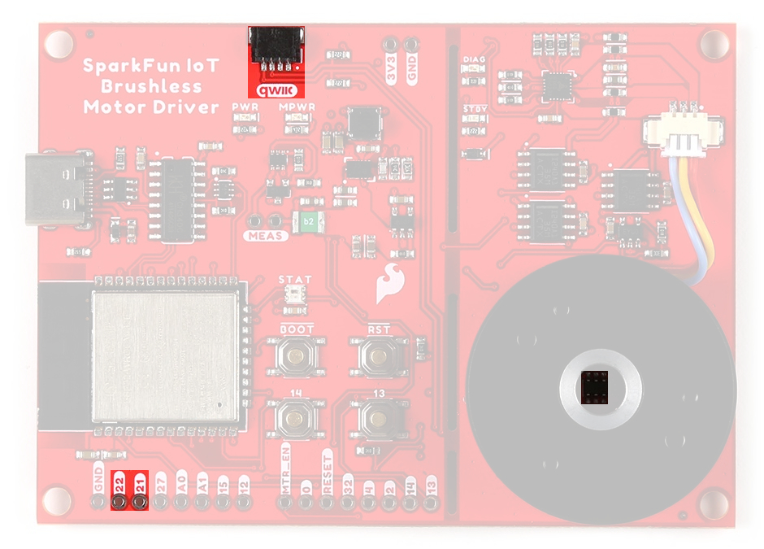
Default I2C bus connections for the IoT Motor Driver.
Tip
To learn more about the inter-integrated circuit (I2C) protocol, check out this great tutorial.
-
Inter-Integrated Circuit (I2C)
Motor Driver - TMC6300
The TMC6300 from Trinamic Motion Control, part of Analog Devices, is a low voltage, 3-Phase BLDC/PMSM motor driver utilizing separate high-side and low-side control signals for its three half-bridges.
-
Features:
- VIN: 2.0V to 11.0V
- Operating current: 7mA
- Standby current: 30nA
- VOUT: 1.8V
- 3 Half-Bridges
- 3 High-side MOSFETs
- 3 Low-side MOSFETs
- I/O Supply Voltage Input
- Diagnostic Output
- Overtemperature Protection
- Shutdown Temperature: 150°C
- Typical Power Dissipation: 1W
- Short Protection
Info
For more details, please refer to the TMC6300 datasheet.
- VIN: 2.0V to 11.0V
-
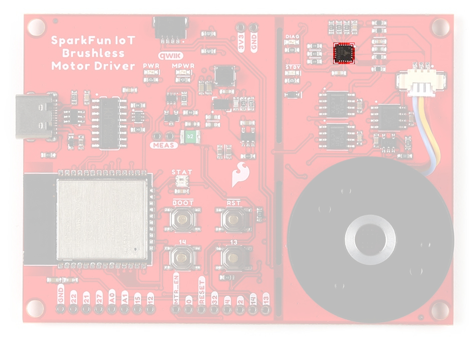
TMC6300 chip on the IoT Motor Driver. For users unfamiliar with the TMC6300 motor driver, please check out our hookup guide below.
-

TMC6300 BLDC Motor Driver Hookup Guide
-
Half-Bridges
The TMC6300 features high-side and low-side MOSFET pairs of the three available half-bridges which control the commutation of the three motor phases.
6 PWM control of a 3-phase motor commutation.
(Source: Modified from the Block commutation vs. FOC in power tool motor control application note)
The electronic commutation sequence for these MOSFETs will depend on the motor that is connected. For most cases, users will provide a PWM signal to each of these pins. These are active-high pins.
| ESP32-WROOM | 16 |
17 |
18 |
23 |
19 |
33 |
|---|---|---|---|---|---|---|
| Motor Driver | UH |
UL |
VH |
VL |
WH |
WL |
Active High
By pulling the pin high, the MOSFET will enable power to flow through that section of the half-bridge.
With the electronic commutation sequence provided to the half-bridges, the output motor phases will drive a connected motor.
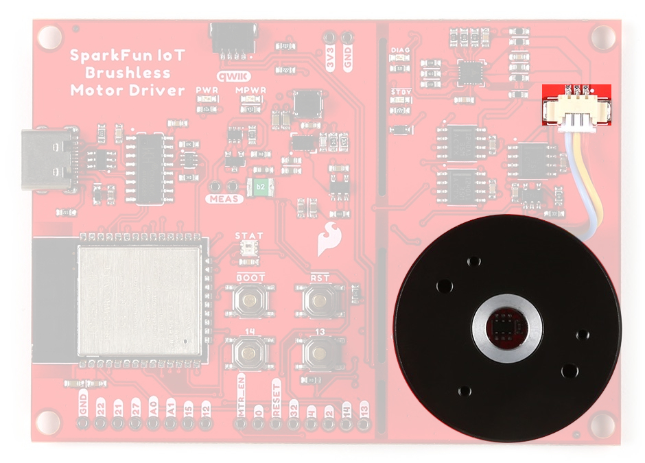U/V/W) from the TMC6300 are used to drive the gimbal motor, attached through the JST connector.
Motor Commutation
The TMC6300 relies on an electrical commutation sequence/signal to drive the motor phases to a BLDC or PMSM motor. The commutation signals for these motors are trapezoidal for BLDC motors and sinusoidal for PMSM motors.
-
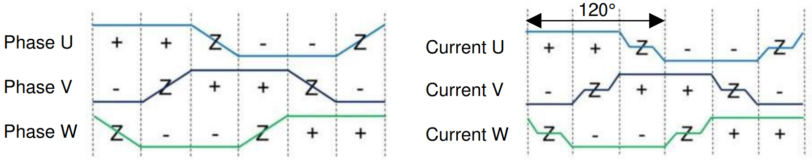
Trapezoidal motor commutation. -
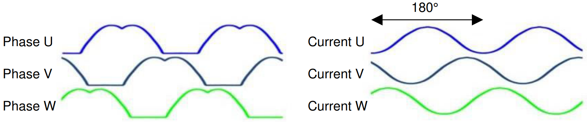
Sinusoidal motor commutation.
Gimbal Motor
Based on measuring the output from one of the coils, our gimbal motor is a PMSM and would require a sinusoidal waveform to drive the motor. It should be noted that a trapezodial waveform can probably be used; however, users may notice effects such as cogging.
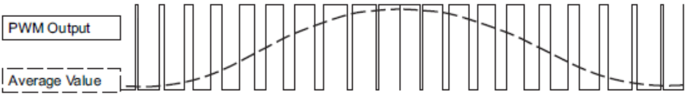
(Source: Demystifying BLDC motor commutation: Trap, Sine, & FOC)
For a trapezoidal signal, the high-side (HS) and low-side (LS) MOSFETs, can just be driven high or low. However, in order to approximate a sinusoidal signal, a progressively varying PWM signal must be provided with all six signals in sync with each other.
VIO/Standby Pin
In it's default configuration, the VIO pin is used to enable the motor driver and set the logic level voltage of the TMC6300 inputs. However, the VIO pin also operates as a standby pin when it is pulled LOW. In standby, the TMC6300 resets and sits in standby mode.
Users can control the VIO pin with GPIO 05 on the ESP32-WROOM module, to reset the TMC6300 or put it in standby mode.
Diagnostic Pin
The diagnostic pin is triggered based on different faults (i.e. shorts and overtemperature) detected by the IC. By default, the status will be indicated by the, green diagnostic, DIAG LED and will remail LOW until triggered. Once triggered, users will need to disable and reset the TMC6300 or power cycle the board.
Users can monitor the diagnostic pin with GPIO 34 on the ESP32-WROOM module, to determine if the TMC6300 need to be reset to clear a fault.
Current Sense Pin
The current sense pin is the foot point of the U and V half-bridges, with a 0.12Ω resistor attached. Users can measure the voltage across the resistor to determine the current flowing to the motor (see the Low-side Op Amp - MCP6021 section below).
Hall-Effect Sensor - TMAG5273
The TMAG5273 from Texas Instruments, is a 3-axis hall-effect sensor utilizing a 12-bit ADC. For more information, please refer to the TMAG5273 datasheet.
-
Features:
- I2C Address:
- 0x35 (Default) (7-bit)
- 0x6A (write)/0x6B (read)
- Magnetic Range (Sensitivity):
- ± 40mT (820 LSB/mT)
- ± 80mT (410 LSB/mT)
- Magnetic Drift: 5%
- Rotational Accuracy: ± 0.5°/360° rotation
- Voltage Range: 1.7 - 3.6V
- Sleep: 5nA
- Wake-Up/Sleep: 1µA
- Active: 2.3mA
- Operating Temperature: –40 - 125°C
- Integrated temperature compensation
- Configurable sample rate
- I2C Address:
-
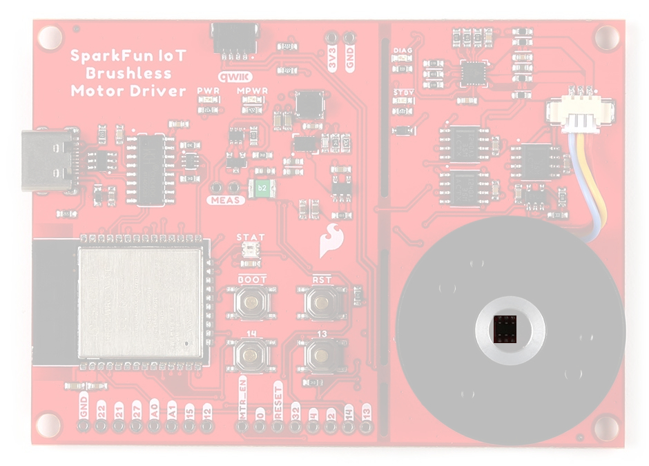
The TMAG5273 hall-effect sensor on the IoT Motor Driver. Magnetic Axes
On the IoT Motor Driver, users will primarily be interested in magnetic field of the X-Y axes to measure the position of the gimbal motor.
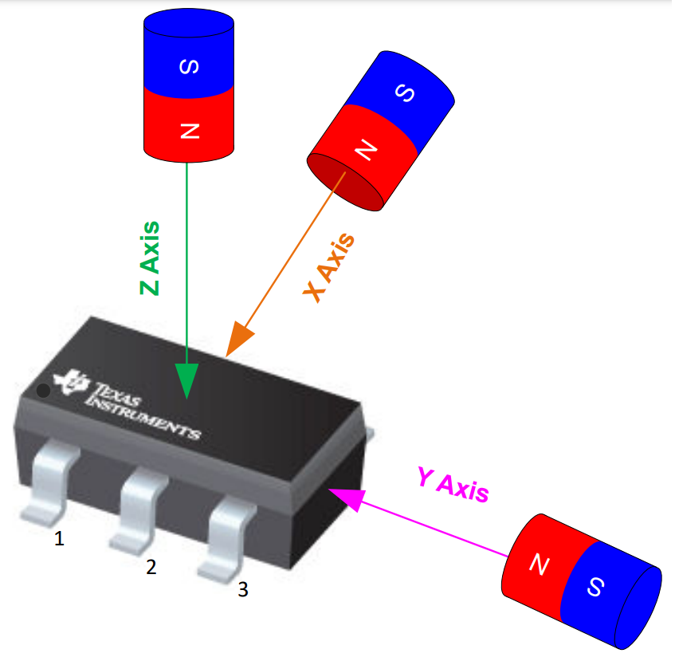
The magnetic axes of TMAG5273 hall-effect sensor.
Info
For more details, please refer to the TMAG5273 datasheet.
Interrupt Pin
The interrupt pin of the TMAG5723 can be configured in different modes to utilize either the INT or SCL pins.
- No interrupt
- Interrupt through
INT - Interrupt through
INTexcept when I2C busy - Interrupt through
SCL - Interrupt through
SCLexcept when I2C busy
Tip
We recommend utilizing the default INT pin to trigger interrupts; as it is already connected to GPIO 04 of the ESP32-WROOM module.
Bus Contention
Texas Instruments does not recommend sharing the I2C bus with multiple devices when using the SCL pin for the interrupt function. The SCL interrupt can potentially corrupt the transactions with other devices, when present on the same I2C bus.
Note
The TMAG5273 is programmed to detect a magnetic threshold in wake-up or sleep mode. Once the magnetic threshold cross is detected, the device asserts a latched interrupt signal through the INT pin, and goes back to stand-by mode. The interrupt latch is cleared through the SCL pin.
Current Sensors
There are two different types of Op Amps on the board to amplify the input voltage for the current measurements.
- The INA240 is used for the in-line current measurements between the TMC6300 and the gimabal motor.
- The MCP6021 is used on the low-side current measurement of the TMC63000's half-bridges.
Inline - INA240
The INA240 from Texas Instruments, is a voltage-output, current-sense amplifier. For more information, please refer to the INA240 datasheet.
-
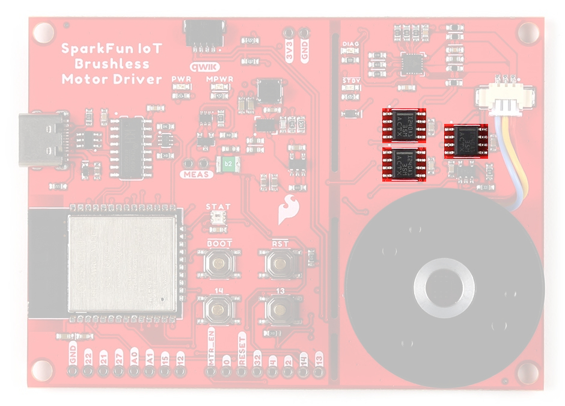
The INA240 current-sense amplifier on the IoT Motor Driver. -
Configured Gain 20 &PlusMn;0.2% Bandwidth 100kHz Voltage Range Range: 2.7 - 5.5V Quiescent Current 1.8 - 2.6mA Operating Temperature –40 - 125°C
Low-side Op Amp - MCP6021
The MCP6021 from Microchip Technology, Inc., is a rail-to-rail input and output operational amplifier. The chip . For more information, please refer to the MCP6021 datasheet.
-
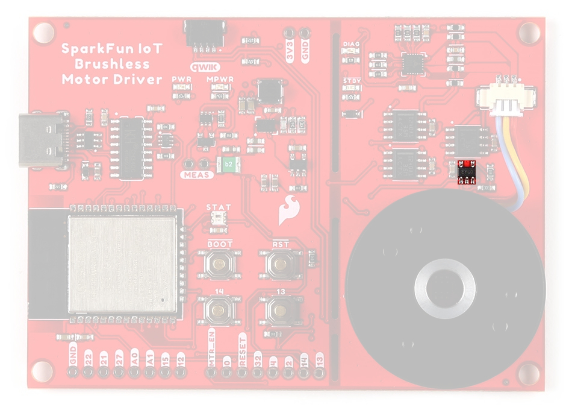
The MCP6021 Op Amp on the IoT Motor Driver. -
Configured Gain 21 Bandwidth 10MHz Voltage Range Range: 2.5 - 5.5V Quiescent Current 0.5 - 1.35mA Operating Temperature –40 - 125°C
Status LEDs
There are five status LEDs on the TMC6300 motor driver:
PWR- Power (Red)- Turns on once power is supplied through the USB-C connector
MPWR- Power (Red)- Turns on once power is supplied through the USB-C connector
DIAG- Diagnostics (Green)- Turns on to indicate a fault (see diagnostic pin section)
STBY- Standby (Blue)- Turns on when the motor driver is enabled
- Turns off, when the IC has been reset and the motor driver is in standby mode
STAT- User (RGB)- Controlled through
GPIO 02
- Controlled through
The status indicator LEDs on the TMC6300 motor driver.
WS2812 RGB LED
The WS2812 RGB LED is controlled with a 24-bit (GRB) data signal. This indicator is connected to GPIO 02 and the digital output pin from the LED is available through a test point. For more information, please refer to the WS2812C datasheet.
The status indicator LED (STAT)on the IoT Motor Driver.
Info
The latest ESP32 Arduino core, now provides a basic RGB LED driver for a WS2812 (or NeoPixel) LED populated the board. For an example of how to utilize the RGB LED driver check out the BlinkRGB example code, which can be accessed from the File drop down menu (i.e File > Examples > ESP32 > GPIO > BlinkRGB).
Buttons
There are four buttons on IoT Motor Driver: RST, BOOT, 13, and 14 buttons.
Buttons on the IoT Motor Driver.
Factory Programming
The IoT Motor Driver board will come pre-programmed out of the bag. By default, the 13/14 buttons can be used to operate the motor:
- 13 - Start/Stop the motor's rotation
- 14 - Switch the direction that the motor is spinning
Reset Button
The RST (reset) button allows users to reset the program running on the ESP32-WROOM module without unplugging the board.
RST button on the IoT Motor Driver.
Boot Control
The BOOT button can be used to force the board into the serial bootloader. Holding down the BOOT button, while connecting the board to a computer through its USB-C connector or resetting the board will cause it to enter the Firmware Download mode. The board will remain in this mode until it power cycles (happens automatically after uploading new firmware) or the RST button is pressed.
- Hold the BOOT button down.
- Reset the MCU.
- While unpowered, connect the board to a computer with through the USB-C connection.
- While powered, press the RST button.
- Release the BOOT button.
- After programming is completed, reboot the MCU.
- Press the RST button.
- Power cycle the board.
BOOT button on the IoT Motor Driver.
Info
⚡ The BOOT button is also connected to GPIO 0.
User Buttons
The 13 and 14 buttons are available for users to configure for their own purposes.
The user buttons (13 and 14) on the IoT Motor Driver.
Factory Programming
The IoT Motor Driver board will come pre-programmed out of the bag. By default, these buttons can be used to operate the motor:
- 13 - Start/Stop the motor's rotation
- 14 - Switch the direction that the motor is spinning
Tip
When utilizing the buttons, users should enable the internal pull-up resistors for the GPIO pins.
Jumpers
Never modified a jumper before?
Check out our Jumper Pads and PCB Traces tutorial for a quick introduction!
-
How to Work with Jumper Pads and PCB Traces
There are nine jumpers on the back of the board that can be used to easily modify a hardware connections on the board.
- SHLD - This jumper can be used to disconnect the shield of the USB-C connector from
GND. - MEAS - This jumper can be used to measure the current consumption of the board.
- BYP - This jumper can be used to bypass the thermal fuse.
- LED Jumpers
- PWR - This jumper can be used to remove power from the red, power LED on the AP2112 LDO regulator.
- MPWR - This jumper can be used to remove power from the red, power LED on the AP63357 LDO regulator.
- STBY - This jumper can be used to remove power from the blue, standby LED.
- DIAG - This jumper can be used to remove power from the green, diagnostic LED.
- INT - This jumper can be used to remove the pull-up resistor from the
INTpin of the hall-effect sensor. - I2C - This jumper can be used to remove the pull-up resistors on the I2C bus.
The jumpers on the back of the IoT Motor Driver.
Primary I2C Bus
The Qwiic connector and hall-effect sensor are attached to the primary I2C bus. The primary I2C bus for this board utilizes the pin connections, detailed in the table below:
I2C bus connections on the IoT Motor Driver.
| Connection | VDD |
GND |
SCL |
SDA |
|---|---|---|---|---|
|
Hall-Effect Sensor (TMAG5273) |
3V3 |
GND | GPIO 22 |
GPIO 21 |
| Qwiic Connector | 3V3 |
GND | GPIO 22 |
GPIO 21 |
Qwiic Connector
A Qwiic connector is provided for users to seamlessly integrate with SparkFun's Qwiic Ecosystem. Otherwise, users can connect their I2C devices through the PTH pins broken out on the board.
Qwiic connector and I2C pins on the IoT Motor Driver.
What is Qwiic?
The Qwiic connect system is a solderless, polarized connection system that allows users to seamlessly daisy chain I2C boards together. Play the video below to learn more about the Qwiic connect system or click on the banner above to learn more about Qwiic products.
Features of the Qwiic System


Qwiic cables (4-pin JST) plug easily from development boards to sensors, shields, accessory boards and more, making easy work of setting up a new prototype.


There's no need to worry about accidentally swapping the SDA and SCL wires on your breadboard. The Qwiic connector is polarized so you know you’ll have it wired correctly every time, right from the start.
The PCB connector is part number SM04B-SRSS (Datasheet) or equivalent. The mating connector used on cables is part number SHR04V-S-B or an equivalent (1mm pitch, 4-pin JST connector).


It’s time to leverage the power of the I2C bus! Most Qwiic boards will have two or more connectors on them, allowing multiple devices to be connected.
Hardware Assembly
USB Programming
The USB connection is utilized for programming and serial communication. Users only need to plug their IoT Motor Driver into a computer using a USB-C cable.
The IoT Motor Driver with USB-C cable attached.
Headers
New to soldering?
If you have never soldered before or need a quick refresher, check out our How to Solder: Through-Hole Soldering guide.
-
How to Solder: Through-Hole Soldering
The pins for the IoT Motor Driver are broken out into 0.1"-spaced pins on the outer edges of the board. When selecting headers, be sure you are aware of the functionality you require.
Soldering headers to the IoT Motor Driver.
Qwiic Devices
The Qwiic system allows users to effortlessly prototype with a Qwiic compatible I2C device without soldering. Users can attach any Qwiic compatible sensor or board, with just a Qwiic cable. (*The example below, is for demonstration purposes and is not pertinent to the board functionality or this tutorial.)
The BME688 environmental and VL53L1X distance Qwiic sensor boards connected to the IoT Motor Driver.
Software Overview
CH340 Driver
Users will need to install the appropriate driver for their computer to recognize the serial-to-UART chip on their board/adapter. Most of the latest operating systems will recognize the CH340C chip on the board and automatically install the required driver.
To manually install the CH340 driver on their computer, users can download it from the WCH website. For more information, check out our How to Install CH340 Drivers Tutorial.

Arduino IDE
Tip
For first-time users, who have never programmed before and are looking to use the Arduino IDE, we recommend beginning with the SparkFun Inventor's Kit (SIK), which is designed to help users get started programming with the Arduino IDE.
Most users may already be familiar with the Arduino IDE and its use. However, for those of you who have never heard the name Arduino before, feel free to check out the Arduino website. To get started with using the Arduino IDE, check out our tutorials below:
-

What is an Arduino?
-
Installing the Arduino IDE
-
Installing an Arduino Library
-
Installing Board Definitions in the Arduino IDE
Install Board Definition
Install the latest ESP32 board definitions in the Arduino IDE.
[**Installing Board Definitions in the Arduino IDE**](https://learn.sparkfun.com/tutorials/1265)
Info
For more instructions, users can follow this tutorial on Installing Additional Cores provided by Arduino. Users will also need the .json file for the Espressif Arduino core:
https://raw.githubusercontent.com/espressif/arduino-esp32/gh-pages/package_esp32_index.json
When selecting a board to program in the Arduino IDE, users should select the SparkFun ESP32 Thing Plus C from the Tools drop-down menu (_i.e. Tools > Board > ESP32 Arduino > SparkFun ESP32 Thing Plus C). Alternatively, users can also select the ESP32 Dev Module; however, they may lose some pin assignments.
Select the SparkFun ESP32 Thing Plus C from the Tools drop-down menu in the Arduino IDE.
Arduino IDE 2.x.x - Alternative Method
In the newest version of the Arduino IDE 2.x.x, users can also select their board (green) and port (blue) from the Select Board & Port dropdown menu (yellow).
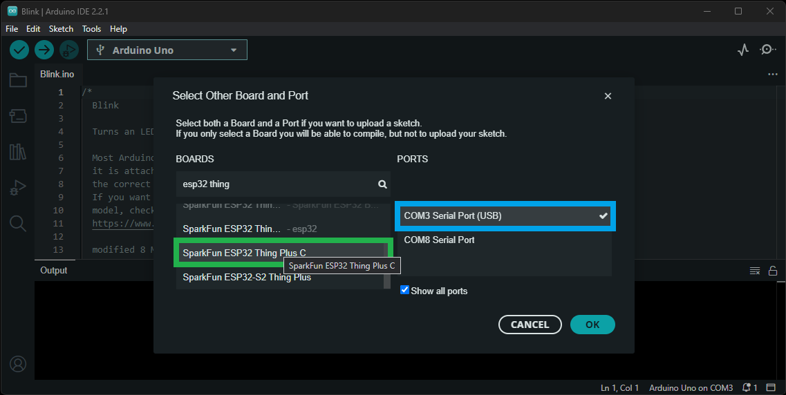
SparkFun TMAG5273 Arduino Library
The SparkFun TMAG5273 Arduino Library can be installed from the library manager in the Arduino IDE.
SparkFun TMAG5273 Arduino library in the library manager of the Arduino IDE.
Arduino IDE (v1.x.x)
In the Arduino IDE v1.x.x, the library manager will have the following appearance for the SimpleFOC library:
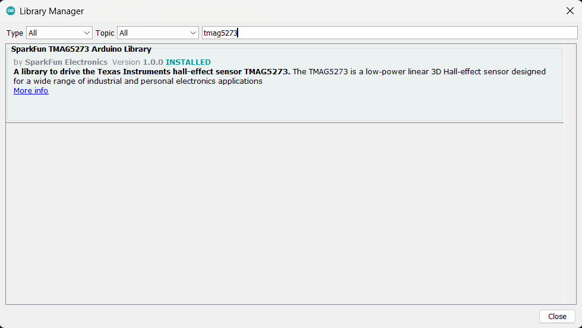
This library will be primarily used to interact with the TMAG5273 hall-effect sensor and return the rotation angle of the motor.
SimpleFOC Arduino Library
The Simple Field Oriented Control Library can be installed from the library manager in the Arduino IDE.
SimpleFOC library in the library manager of the Arduino IDE.
Arduino IDE (v1.x.x)
In the Arduino IDE v1.x.x, the library manager will have the following appearance for the SimpleFOC library:
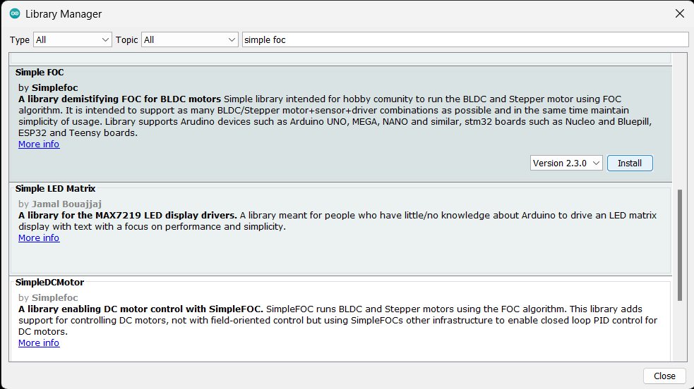
This library utilizes a motor control scheme called field oriented control (FOC), which can utilize a feedback control loop to drive a motor with a higher power efficiency and precision characteristics, like evenly distributed torque control.
Info
For more details about the library, check out the online documentation.
Supported Hardware
For a detailed and up-to-date list of the hardware supported by this library, check out the library's documentation. The following are excerpts taken from the library's documentation page:
Supported microcontrollers
Choosing the Right Microcontroller
There are three main parameters when choosing the microcontroller for your project:
- Processing power (clock speed, architecture, etc.) - this will determine the performance of the FOC algorithm and the maximum speed of your motor.
- PWM generation capabilities - this will determine the number of motors you can control and the control modes you can use.
- ADC sensing capabilities - this will determine the current sensing options you have for your project.
1. Processing power
When it comes to the processing power, the rule of thumb is:
- The higher the clock speed the better.
- Aim for the FOC execution time of loopFOC() to be above 1kHz (ideally above 5kHz) depending on the motor and sensor combination you are using.
Info
For more details, please refer to the SimpleFOC Arduino library documentation.
Arduino SimpleFOClibrary has a goal to support as many BLDC and stepper motor drivers as possible. Till this moment there are two kinds of motor drivers supported by this library:
- BLDC motor driver
- 3 PWM signals ( 3 phase )
- 6 PWM signals ( 3 phase )
Current Limitations
Choosing the Appropriate Driver
Selecting the right hardware is a balance of motor type, power requirements, and the level of control precision you need.
1. Motor Type
- BLDC Motors: Requires a BLDC driver. Ensure the current and voltage ratings match your motor's specs.
⚠️ No Drone ESCs Traditional drone ESCs are not suitable for FOC because they typically use a fixed commutation scheme and lack the necessary control interfaces.
- Stepper Motors:
- Dedicated Stepper Driver: Best for 2-phase motors within standard current ranges (ex.NEMA17)
- Hybrid Mode: You can actually use any BLDC driver to run a stepper motor. - See example
⚠️ No Step/Dir Drivers Traditional "EasyDrivers" or A4988s (in step/dir mode) cannot be used for FOC because they do not allow direct phase voltage control.
2. Current Requirements
- Low Current (< 5A): Integrated driver ICs are cost-effective and easy to use.
- Examples: L6234, DRV8313, DRV8316.
- High Current (> 5A): Requires discrete MOSFET-based designs with robust thermal management (heatsinks/fans).
- Examples: DRV8302, VESC-based hardware.
- Rule of Thumb: Always select a driver with a current rating at least 20-30% higher than your motor's expected continuous current.
📢 Critical: Read before powering up!
Before running any motor, you must ensure your hardware can handle the stall current. FOC can easily pull more current than a driver can handle if not limited in software.
The Worst-Case Calculation Check your motor's phase resistance ($\(R\)\() and your power supply voltage (\)\(V_{DC}\)\(). The maximum possible current (\)\(I_{max}\)$) is:
Safety Steps:
- Compare: If $\(I_{max}\)$ exceeds your driver's rating, you must limit the voltage in software.
- Software Limit: Use driver.voltage_limit and (motor.voltage_limit and/or motor.current_limit) to stay within safe bounds. - see motor docs
- Power Supply: If you can, use a current-limited lab bench power supply for your initial tests.
Tip
While the TMC6300 isn't directly listed as part of the supported hardware for the SimpleFOC Arduino library, we have verified that is compatible with the library.
Info
For more details, please refer to the SimpleFOC Arduino library documentation.
Arduino SimpleFOClibrary supports two types of BLDC motors:
-
BLDC motors
-
3 phase (3 wire):
Gimbal Motors
Gimbal motors
Gimbal motors will work basically with any BLDC motor driver, but since the high-performance drivers have current measurement circuits optimized for high currents you will not have any benefit of using them. Therefore low-power BLDC motor drivers will have comparable performance as the expensive high-power, high-performance drivers for gimbal motors. What is in my opinion very cool! 😃 This was one of the main motivations to start developing SimpleFOCShield.
Some of the characteristics of Gimbal motors are: - High torque on low velocities - Very smooth operation - Internal resistance >10Ω - Currents up to 5A
High-performance Motors
-
-
Stepper motors
- 2 phase (4 wire)
Current Limitations
Before running any motor, you must ensure your hardware can handle the stall current. FOC can easily pull more current than a driver can handle if not limited in software.
The Worst-Case Calculation Check your motor's phase resistance ($\(R\)\() and your power supply voltage (\)\(V_{DC}\)\(). The maximum possible current (\)\(I_{max}\)$) is:
Safety Steps:
- Compare: If $\(I_{max}\)$ exceeds your driver's rating, you must limit the voltage in software.
- Software Limit: Use driver.voltage_limit and (motor.voltage_limit and/or motor.current_limit) to stay within safe bounds. - see motor docs
- Power Supply: If you can, use a current-limited lab bench power supply for your initial tests.
Info
For more details, please refer to the SimpleFOC Arduino library documentation.
6PWM Motor Driver
Users will need to utilize the BLDCDriver6PWM class to provide the six PWM signals required for the TMC6300 motor driver.
BLDCDriver6PWM-
This class provides an abstraction layer for most of the common BLDC drivers, which require six PWM signals. This method offers more control than a three PWM motor drivers, since each of the 6 half-bridges MOSFETs can be controlled independently.


{kind=link}
{kind=link}
{kind=link}
{kind=link}
{kind=link}
{kind=link}
{kind=link}
{kind=link}
{kind=link}
{kind=link}
{kind=link}
{kind=link}
{kind=link}
{kind=link}
{kind=link}
{kind=link}
{kind=link}
{kind=link}
{kind=link}
{kind=link}
{kind=link}
{kind=link}
{kind=link}
{kind=link}
{kind=link}
{kind=link}
{kind=link}
{kind=link}
{kind=link}
{kind=link}
{kind=link}
{kind=link}
{kind=link}
{kind=link}
{kind=link}